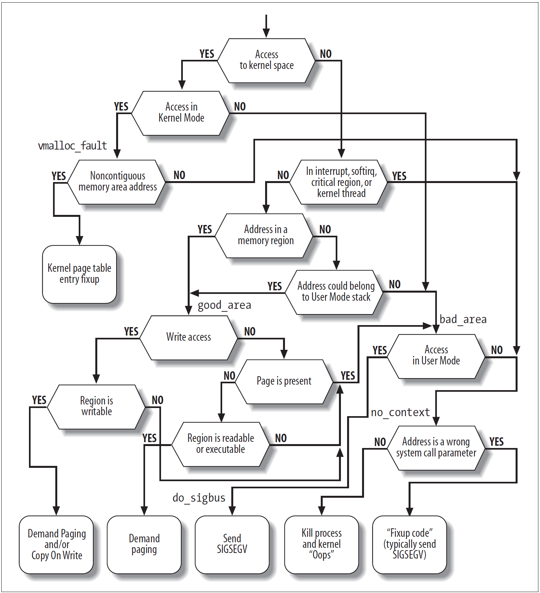

Lab 5: RV64 缺页异常处理¶
非常建议大家先通读整篇实验指导，完成思考题后再动手写代码
1. 实验目的¶
- 通过 vm_area_struct 数据结构实现对task 多区域 虚拟内存的管理。
- 在 Lab4 实现用户态程序的基础上，添加缺页异常处理 Page Fault Handler。
2. 实验环境¶
- Environment in previous labs.
3. 背景知识¶
下面介绍的是 Linux 中对于 VMA (virtual memory area) 和 Page Fault Handler 的介绍（顺便帮大家复习下期末考）。由于 Linux 巨大的体量，无论是 VMA 还是 Page Fault 的逻辑都较为复杂，这里只要求大家实现简化版本的，所以不要在阅读背景介绍的时候有太大的压力。
3.1 vm_area_struct 介绍¶
在 linux 系统中，vm_area_struct 是虚拟内存管理的基本单元，vm_area_struct 保存了有关连续虚拟内存区域（简称 vma）的信息。linux 具体某一 task 的虚拟内存区域映射关系可以通过 procfs 读取 /proc/pid/maps 的内容来获取:
比如，如下一个常规的 bash task ，假设它的 task 号为 7884 ，则通过输入如下命令，就可以查看该 task 具体的虚拟地址内存映射情况(部分信息已省略)。
#cat /proc/7884/maps
556f22759000-556f22786000 r--p 00000000 08:05 16515165 /usr/bin/bash
556f22786000-556f22837000 r-xp 0002d000 08:05 16515165 /usr/bin/bash
556f22837000-556f2286e000 r--p 000de000 08:05 16515165 /usr/bin/bash
556f2286e000-556f22872000 r--p 00114000 08:05 16515165 /usr/bin/bash
556f22872000-556f2287b000 rw-p 00118000 08:05 16515165 /usr/bin/bash
556f22fa5000-556f2312c000 rw-p 00000000 00:00 0 [heap]
7fb9edb0f000-7fb9edb12000 r--p 00000000 08:05 16517264 /usr/lib/x86_64-linux-gnu/libnss_files-2.31.so
7fb9edb12000-7fb9edb19000 r-xp 00003000 08:05 16517264 /usr/lib/x86_64-linux-gnu/libnss_files-2.31.so
...
7ffee5cdc000-7ffee5cfd000 rw-p 00000000 00:00 0 [stack]
7ffee5dce000-7ffee5dd1000 r--p 00000000 00:00 0 [vvar]
7ffee5dd1000-7ffee5dd2000 r-xp 00000000 00:00 0 [vdso]
ffffffffff600000-ffffffffff601000 --xp 00000000 00:00 0 [vsyscall]
从中我们可以读取如下一些有关该 task 内虚拟内存映射的关键信息：
vm_start: (第1列) 指的是该段虚拟内存区域的开始地址vm_end: (第2列) 指的是该段虚拟内存区域的结束地址vm_flags: (第3列) 该vm_area的一组权限(rwx)标志，vm_flags的具体取值定义可参考linux源代码的 linux/mm.hvm_pgoff: (第4列) 虚拟内存映射区域在文件内的偏移量vm_file: (第⅚/7列) 分别表示：映射文件所属设备号/以及指向关联文件结构的指针/以及文件名
注意这里记录的 vm_start 和 vm_end 都是用户态的虚拟地址，并且内核并不会将除了用户程序会用到的内存区域以外的部分添加成为 VMA。
可以看到，一段内存可以被用户程序当成某一个文件的一部分。如果这样的 VMA 产生了缺页异常，说明文件中对应的页不在操作系统的 buffer pool 中（回想起数据库课上学习的磁盘缓存了吗），或者是由于 buffer pool 的调度策略被换出到磁盘上了。这时候操作系统会用驱动读取硬盘上的内容，放入 buffer pool，然后修改当前 task 的页表来让其能够用原来的地址访问文件内容。而这一切对用户程序来说是完全透明的，除了访问延迟。
除了跟文件建立联系以外，VMA 还可能是一块匿名 (anonymous) 的区域。例如被标成 [stack] 的这一块区域，和文件之间并没有什么关系。
其它保存在 vm_area_struct 中的信息还有：
vm_ops: 该vm_area中的一组工作函数，其中是一系列函数指针，可以根据需要进行定制vm_next/vm_prev: 同一 task 的所有虚拟内存区域由 链表结构 链接起来，这是分别指向前后两个vm_area_struct结构体的指针
可以发现，原本的 Linux 使用链表对一个 task 内的 VMA 进行管理。但是由于如今一个程序可能体量非常巨大，所以现在的 Linux 已经用虚拟地址为索引来建立红黑树了（如果你喜欢可以在这次实验中也手搓一棵红黑树）。
3.2 缺页异常 Page Fault¶
缺页异常是一种正在运行的程序访问当前未由内存管理单元（MMU）映射到虚拟内存的页面时，由计算机 硬件 引发的异常类型。访问未被映射的页或访问权限不足，都会导致该类异常的发生。处理缺页异常通常是操作系统内核的一部分，当处理缺页异常时，操作系统将尝试使所需页面在物理内存中的位置变得可访问（建立新的映射关系到虚拟内存）。而如果在非法访问内存的情况下，即发现触发 Page Fault 的虚拟内存地址（Bad Address）不在当前 task vm_area_struct 链表中所定义的允许访问的虚拟内存地址范围内，或访问位置的权限条件不满足时，缺页异常处理将终止该程序的继续运行。
3.2.1 Page Fault Handler¶
总的说来，处理缺页异常需要进行以下步骤：
- 捕获异常
- 寻找当前 task 中对应了 导致产生了异常的地址 对应的 VMA
- 判断产生异常的原因
- 如果是匿名区域，那么开辟 一页 内存，然后把这一页映射到导致异常产生 task 的页表中。如果不是，那么首先将硬盘中的内容读入 buffer pool，将 buffer pool 中这段内存映射给 task。
- 返回到产生了该异常的那条指令，并继续执行程序
当 Linux 发生缺页异常并找到了当前 task 中对应的 vm_area_struct 后，可以根据以下信息来判断发生异常的原因
- CSRs
vm_area_struct中记录的信息- 发生异常的虚拟地址对应的 PTE (page table entry) 中记录的信息
并对当前的异常进行处理。
Page Fault 是一类比较复杂的异常，可以看到 Linux 内核中的处理时的逻辑是充满了 if else 乃至 goto 的：

4 实验步骤¶
4.0 在开始 Lab5 之前¶
我们的实验已经进行了将近一学期，在持续开发的代码上添加内容可能会让你的思维比较混乱。如果你认为你的代码可能需要整理，这里有一份简要的 Checklist，可以让你的代码更简洁，并让你在实现 Lab5 的时候思路更加清晰。如果你要按照以下的建议进行修改，请务必确认做好备份，并在改一小部分后就编译运行一次，不要让你辛苦写的代码 crash。当然，这一个步骤并不是强制的，完全复用之前的代码仍然可以完成 Lab5.
-
由于一些历史遗留问题，在之前的实验指导中的
task_struct中包含了一个thread_info域，但其实这个域并不必要，因为我们在内核态可以用sp和sscratch来存储内核态和用户态的两个指针，不需要借助thread_info中的两个域。因为switch_to中直接使用了汇编来访问task_struct中的内容，需要修改__switch_to中用于访问thread这个成员的一些 offset。当然如果你在别的地方也直接使用了汇编来访存task_struct中的值，你也需要一并修改。这里需要你善用grep命令。 -
调整
pt_regs和trap_handler，来更好地捕获异常并辅助调试。比如我使用这样的pt_regs和trap_handler:
struct pt_regs {
uint64_t zero;
...
uint64_t t6;
uint64_t sepc;
uint64_t sstatus;
uint64_t stval;
uint64_t sscratch;
uint64_t scause;
};
void trap_handler(unsigned long scause, struct pt_regs *regs) {
if (scause == 0x8000000000000005) {
...
} else if (scause == 8) {
uint64_t sys_call_num = regs->a7;
if (sys_call_num == 64) {
...
} else if (sys_call_num == 172) {
...
} else if (sys_call_num == 220) {
...
} else {
printk("[S] Unhandled syscall: %lx", sys_call_num);
while (1);
}
} else if (scause == ...){
...
} else {
printk("[S] Unhandled trap, ");
printk("scause: %lx, ", scause);
printk("stval: %lx, ", regs->stval);
printk("sepc: %lx\n", regs->sepc);
while (1);
}
}
这样发生了没有处理的异常、中断或者是系统调用的时候，内核会直接进入死循环。你可以调整 printk 的内容来让内核给你输出你需要的信息
- 将
vmlinux.lds.S和程序中的uapp_start，uapp_end分别换成ramdisk_start和ramdisk_end，来提醒自己这一段内容是对硬盘的模拟，而不是可以直接使用的内存。需要拷贝进入alloc_pages分配出来的“真的”内存，才能够直接被使用。
4.1 准备工作¶
- 此次实验基于 lab4 同学所实现的代码进行。
- 从 repo 同步以下文件夹: user 并按照以下步骤将这些文件正确放置。
.
└── user
├── Makefile
├── getpid.c
├── link.lds
├── printf.c
├── start.S
├── stddef.h
├── stdio.h
├── syscall.h
└── uapp.S
- 在
user/getpid.c中我们设置了四个main函数。在实现了Page Fault之后第一个main函数可以成功运行，在 lab6 实现了fork之后其余三个main函数可以成功运行。这些用户程序的行为需要同学们自行理解（估计期末考也一定会考到）。
4.2 实现 VMA¶
修改 proc.h，增加如下相关结构：(因为链表太麻烦了，这次让大家用数组存储 VMA)
#define VM_X_MASK 0x0000000000000008
#define VM_W_MASK 0x0000000000000004
#define VM_R_MASK 0x0000000000000002
#define VM_ANONYM 0x0000000000000001
struct vm_area_struct {
uint64_t vm_start; /* VMA 对应的用户态虚拟地址的开始 */
uint64_t vm_end; /* VMA 对应的用户态虚拟地址的结束 */
uint64_t vm_flags; /* VMA 对应的 flags */
/* uint64_t file_offset_on_disk */ /* 原本需要记录对应的文件在磁盘上的位置，
但是我们只有一个文件 uapp，所以暂时不需要记录 */
uint64_t vm_content_offset_in_file; /* 如果对应了一个文件，
那么这块 VMA 起始地址对应的文件内容相对文件起始位置的偏移量，
也就是 ELF 中各段的 p_offset 值 */
uint64_t vm_content_size_in_file; /* 对应的文件内容的长度。
思考为什么还需要这个域?
和 (vm_end-vm_start)
一比，不是冗余了吗? */
};
struct task_struct {
uint64_t state;
uint64_t counter;
uint64_t priority;
uint64_t pid;
struct thread_struct thread;
pagetable_t pgd;
uint64_t vma_cnt; /* 下面这个数组里的元素的数量 */
struct vm_area_struct vmas[0]; /* 为什么可以开大小为 0 的数组?
这个定义可以和前面的 vma_cnt 换个位置吗? */
};
每一个 vm_area_struct 都对应于 task 地址空间的唯一 连续 区间。注意我们这里的 vm_flag 和 p_flags 并没有按 bit 进行对应，请同学们仔细对照 bit 的位置，以免出现问题。
为了支持 Demand Paging（见 4.3），我们需要支持对 vm_area_struct 的添加和查找。
void do_mmap(struct task_struct *task, uint64_t addr, uint64_t length, uint64_t flags,
uint64_t vm_content_offset_in_file, uint64_t vm_content_size_in_file);
struct vm_area_struct *find_vma(struct task_struct *task, uint64_t addr);
find_vma查找包含某个 addr 的 vma，该函数主要在 Page Fault 处理时起作用。do_mmap创建一个新的 vma
4.3 Page Fault Handler¶
4.3.1 RISC-V Page Faults¶
RISC-V 异常处理：当系统运行发生异常时，可即时地通过解析 scause 寄存器的值，识别如下三种不同的 Page Fault。
SCAUSE 寄存器指示发生异常的种类：
| Interrupt | Exception Code | Description |
|---|---|---|
| 0 | 12 | Instruction Page Fault |
| 0 | 13 | Load Page Fault |
| 0 | 15 | Store/AMO Page Fault |
4.3.2 常规处理 Page Fault 的方式介绍¶
处理缺页异常时所需的信息如下：
- 触发 Page Fault 时访问的虚拟内存地址 VA。当触发 page fault 时，
stval寄存器被被硬件自动设置为该出错的 VA 地址 - 导致 Page Fault 的类型：
- Exception Code = 12: page fault caused by an instruction fetch
- Exception Code = 13: page fault caused by a read
- Exception Code = 15: page fault caused by a write
- 发生 Page Fault 时的指令执行位置，保存在
sepc中 - 当前 task 合法的 VMA 映射关系，保存在
vm_area_struct链表中
处理缺页异常的方式：
- 当缺页异常发生时，检查 VMA
- 如果当前访问的虚拟地址在 VMA 中没有记录，即是不合法的地址，则运行出错（本实验不涉及）
- 如果当前访问的虚拟地址在 VMA 中存在记录，则进行相应的映射即可：
- 如果访问的页是存在数据的，如访问的是代码，则需要从文件系统中读取内容，随后进行映射
- 否则是匿名映射，即找一个可用的帧映射上去即可
4.3.3 Demand Paging¶
在前面的实验中提到，Linux 在 Page Fault Handler 中需要考虑三类数据的值。我们的实验经过简化，只需要根据 vm_area_struct 中的 vm_flags 来确定当前发生了什么样的错误，并且需要如何处理。在初始化一个 task 时我们既 不分配内存 ，又 不更改页表项来建立映射 。回退到用户态进行程序执行的时候就会因为没有映射而发生 Page Fault，进入我们的 Page Fault Handler 后，我们再分配空间（按需要拷贝内容）进行映射。
例如，我们原本要为用户态虚拟地址映射一个页，需要进行如下操作：
- 使用
alloc_page分配一个页的空间 - 对这个页中的数据进行填充
- 将这个页映射到用户空间，供用户程序访问。并设置好对应的 U, W, X, R 权限，最后将 V 置为 1，代表其有效。
而为了减少 task 初始化时的开销，我们对一个 Segment 或者 用户态的栈 只需分别建立一个 VMA。
修改 task_init 函数代码，更改为 Demand Paging
- 取消之前实验中对
U-MODE代码以及栈进行的映射 - 调用
do_mmap函数，建立用户 task 的虚拟地址空间信息，在本次实验中仅包括两个区域: - 代码和数据区域：该区域从 ELF 给出的 Segment 起始地址
phdr->p_offset开始，权限参考phdr->p_flags进行设置。 - 用户栈：范围为
[USER_END - PGSIZE, USER_END)，权限为VM_READ | VM_WRITE, 并且是匿名的区域。
在完成上述修改之后，如果运行代码我们就可以截获一个 page fault，如下所示：
[S] Switch to: pid: 1, priority: 1, counter: 4
[S] Unhandled trap, scause: 000000000000000c, stval: 00000000000100e8, sepc: 00000000000100e8
************************** uapp elf_header **************************
❯ readelf -a uapp
ELF Header:
Magic: 7f 45 4c 46 02 01 01 00 00 00 00 00 00 00 00 00
Class: ELF64
Data: 2's complement, little endian
Version: 1 (current)
OS/ABI: UNIX - System V
ABI Version: 0
Type: EXEC (Executable file)
Machine: RISC-V
Version: 0x1
Entry point address: 0x100e8
......
************************** uapp elf_header **************************
可以看到，发生了缺页异常的 sepc 是 0x100e8，说明我们在 sret 来执行用户态程序的时候，第一条指令就因为 V-bit 为 0 表征其映射的地址无效而发生了异常，并且发生的异常是 Insturction Page Fault。
实现 Page Fault 的检测与处理
- 修改
trap.c, 添加捕获 Page Fault 的逻辑 - 当捕获了
Page Fault之后，需要实现缺页异常的处理函数do_page_fault。 我们最先捕获到了一条指令页错误异常，这个异常需要你新分配一个页，并拷贝 uapp 这个 ELF 文件中的对应内容到新分配的页内，然后将这个页映射到用户空间中。 - 我们之后还会捕获到
0xd, 0xf类型的异常，处理的逻辑可以参考这个流程：
void do_page_fault(struct pt_regs *regs) {
/*
1. 通过 stval 获得访问出错的虚拟内存地址（Bad Address）
2. 通过 find_vma() 查找 Bad Address 是否在某个 vma 中
3. 分配一个页，将这个页映射到对应的用户地址空间
4. 通过 (vma->vm_flags | VM_ANONYM) 获得当前的 VMA 是否是匿名空间
5. 根据 VMA 匿名与否决定将新的页清零或是拷贝 uapp 中的内容
*/
}
4.4 编译及测试¶
在测试时，由于大家电脑性能都不一样，如果出现了时钟中断频率比用户打印频率高很多的情况，可以减少用户程序里的 while 循环的次数来加快打印，只要 OS 和用户态程序运行符合你的预期，那就是正确的。
- 输出示例
OpenSBI v1.1
____ _____ ____ _____
/ __ \ / ____| _ \_ _|
| | | |_ __ ___ _ __ | (___ | |_) || |
| | | | '_ \ / _ \ '_ \ \___ \| _ < | |
| |__| | |_) | __/ | | |____) | |_) || |_
\____/| .__/ \___|_| |_|_____/|____/_____|
| |
|_|
Platform Name : riscv-virtio,qemu
Platform Features : medeleg
Platform HART Count : 1
Platform IPI Device : aclint-mswi
Platform Timer Device : aclint-mtimer @ 10000000Hz
Platform Console Device : uart8250
Platform HSM Device : ---
Platform Reboot Device : sifive_test
Platform Shutdown Device : sifive_test
Firmware Base : 0x80000000
Firmware Size : 288 KB
Runtime SBI Version : 1.0
Domain0 Name : root
Domain0 Boot HART : 0
Domain0 HARTs : 0*
Domain0 Region00 : 0x0000000002000000-0x000000000200ffff (I)
Domain0 Region01 : 0x0000000080000000-0x000000008007ffff ()
Domain0 Region02 : 0x0000000000000000-0xffffffffffffffff (R,W,X)
Domain0 Next Address : 0x0000000080200000
Domain0 Next Arg1 : 0x0000000087e00000
Domain0 Next Mode : S-mode
Domain0 SysReset : yes
Boot HART ID : 0
Boot HART Domain : root
Boot HART Priv Version : v1.12
Boot HART Base ISA : rv64imafdch
Boot HART ISA Extensions : time,sstc
Boot HART PMP Count : 16
Boot HART PMP Granularity : 4
Boot HART PMP Address Bits: 54
Boot HART MHPM Count : 16
Boot HART MIDELEG : 0x0000000000001666
Boot HART MEDELEG : 0x0000000000f0b509
[S] buddy_init done!
[S] proc_init done!
2023 Hello RISC-V
Time remaining: 1, switching to PID: 1
[U] pid: 1, sp is 0000003fffffffe0, this is print No. 1
[U] pid: 1, sp is 0000003fffffffe0, this is print No. 2
[U] pid: 1, sp is 0000003fffffffe0, this is print No. 3
[U] pid: 1, sp is 0000003fffffffe0, this is print No. 4
[U] pid: 1, sp is 0000003fffffffe0, this is print No. 5
Time remaining: 5, switching to PID: 4
[U] pid: 4, sp is 0000003fffffffe0, this is print No. 1
[U] pid: 4, sp is 0000003fffffffe0, this is print No. 2
[U] pid: 4, sp is 0000003fffffffe0, this is print No. 3
[U] pid: 4, sp is 0000003fffffffe0, this is print No. 4
[U] pid: 4, sp is 0000003fffffffe0, this is print No. 5
[U] pid: 4, sp is 0000003fffffffe0, this is print No. 6
[U] pid: 4, sp is 0000003fffffffe0, this is print No. 7
[U] pid: 4, sp is 0000003fffffffe0, this is print No. 8
[U] pid: 4, sp is 0000003fffffffe0, this is print No. 9
[U] pid: 4, sp is 0000003fffffffe0, this is print No. 10
[U] pid: 4, sp is 0000003fffffffe0, this is print No. 11
[U] pid: 4, sp is 0000003fffffffe0, this is print No. 12
[U] pid: 4, sp is 0000003fffffffe0, this is print No. 13
[U] pid: 4, sp is 0000003fffffffe0, this is print No. 14
[U] pid: 4, sp is 0000003fffffffe0, this is print No. 15
Time remaining: 10, switching to PID: 2
[U] pid: 2, sp is 0000003fffffffe0, this is print No. 1
[U] pid: 2, sp is 0000003fffffffe0, this is print No. 2
[U] pid: 2, sp is 0000003fffffffe0, this is print No. 3
[U] pid: 2, sp is 0000003fffffffe0, this is print No. 4
[U] pid: 2, sp is 0000003fffffffe0, this is print No. 5
[U] pid: 2, sp is 0000003fffffffe0, this is print No. 6
[U] pid: 2, sp is 0000003fffffffe0, this is print No. 7
[U] pid: 2, sp is 0000003fffffffe0, this is print No. 8
[U] pid: 2, sp is 0000003fffffffe0, this is print No. 9
......
思考题¶
使用 Ctrl-f 来搜寻当前页面中的问号，根据上下文来回答这些问题：
uint64_t vm_content_size_in_file;对应的文件内容的长度。为什么还需要这个域?struct vm_area_struct vmas[0];为什么可以开大小为 0 的数组? 这个定义可以和前面的 vma_cnt 换个位置吗?
作业提交¶
同学需要提交实验报告以及整个工程代码。在提交前请使用 make clean 清除所有构建产物。请在处理 Page Fault 前，输出一段信息表明发生了 Page Fault，并且输出 sepc, scause, stval。并且对于每一个我们给出的 main 函数，请截图到每个进程至少被调度到两次为止。并标明在各个 main 作为 uapp 的情况下，一共会发生多少次 Page Fault。